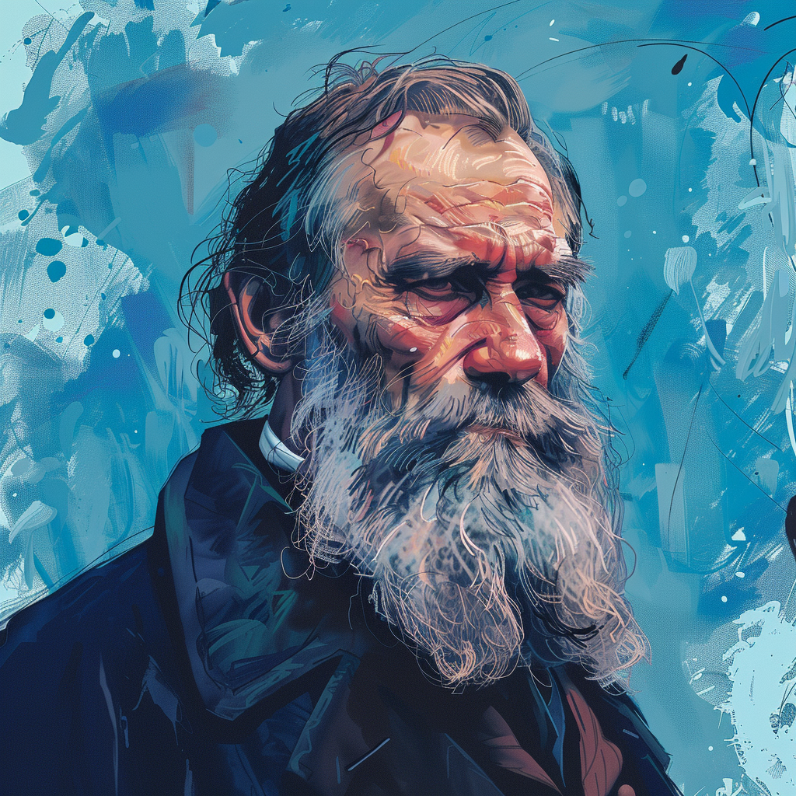
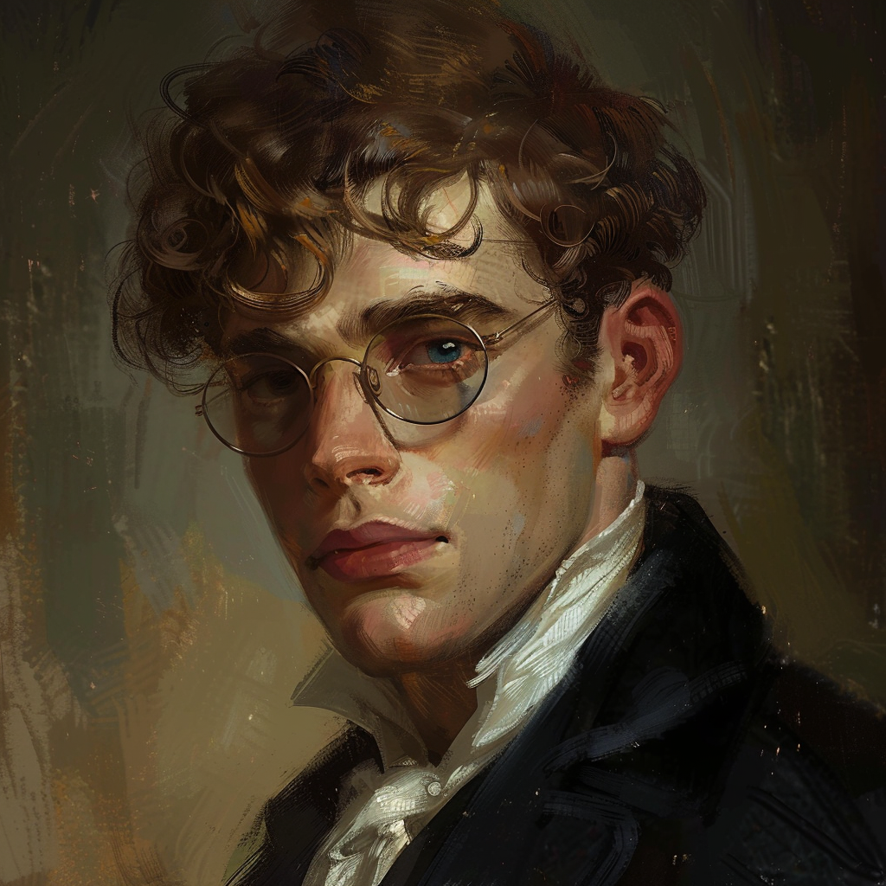
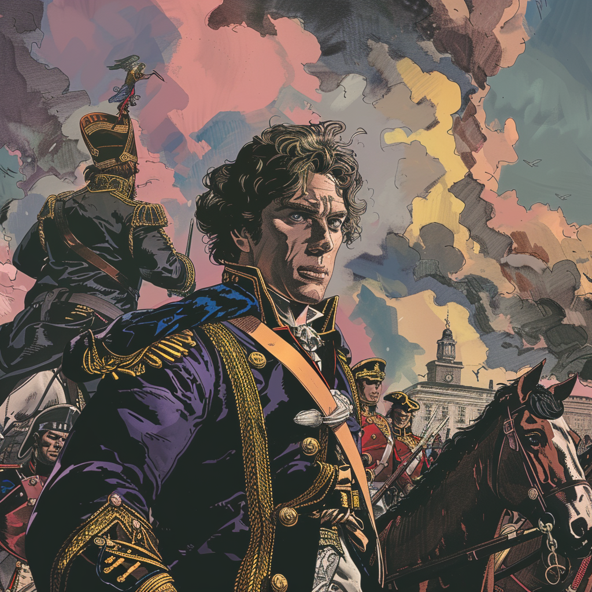
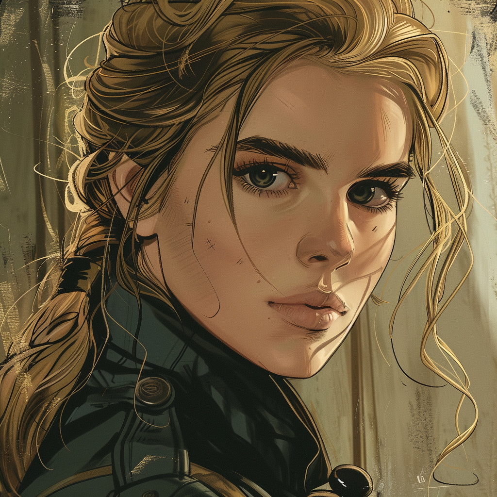
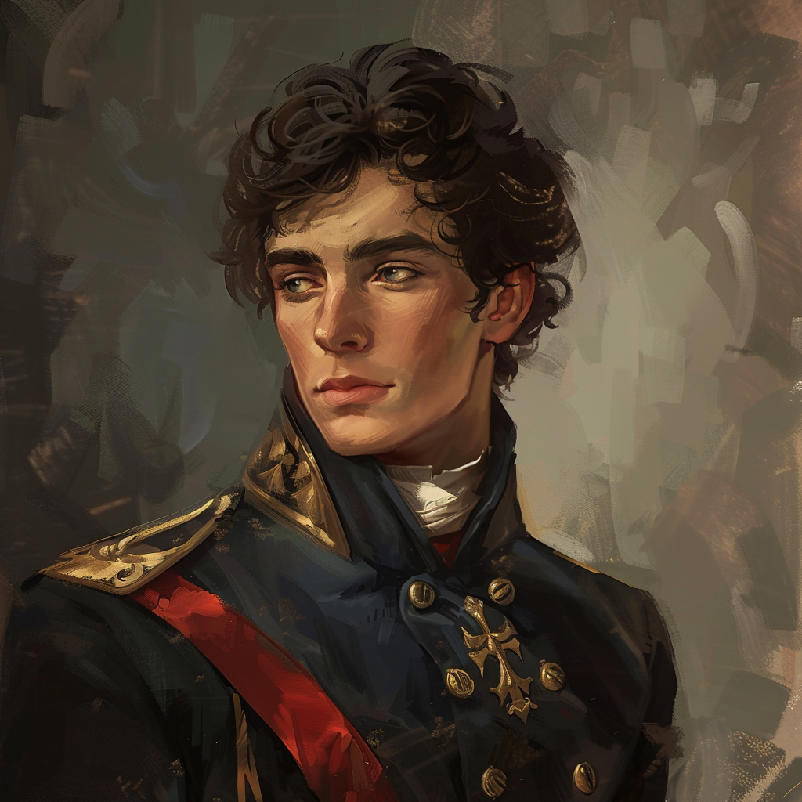

Leo Tolstoy, 1828-1910. In 1869 he published War and Peace in full.

Some of Tolstoy's characters

Pierre Bezukhov, is an introspective young man without clear direction.

Andry Bolkonsky, close friend of Pierre, is the son of a prominent count.

Natasha Rostov, sister to Nikolay rostov, is the embodiment of joie de vivre.

Nikolay Rostov, son of count Ilya Rostov, is a young member of the hussars.
“Why does an apple fall when it is ripe? Is it brought down by the force of gravity? Is it because its stalk withers? Because it is dried by the sun, because it grows too heavy, or because the boy standing under the tree wants to eat it? None of these is the cause.... Every action of theirs, that seems to them an act of their own freewill is in the historical sense not free at all but is bound up with the whole course of history and preordained from all eternity.”